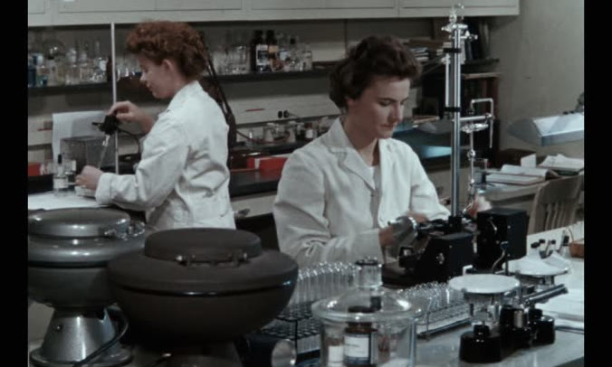
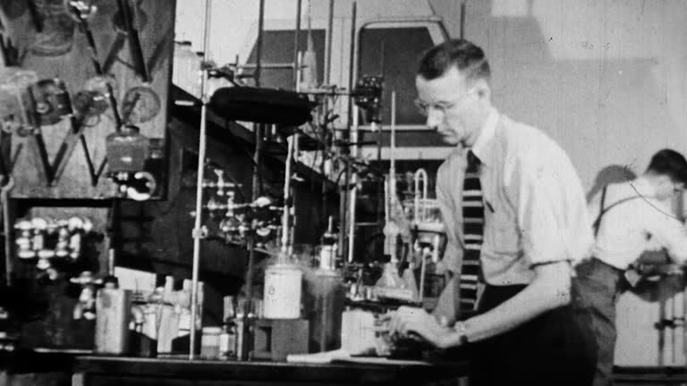
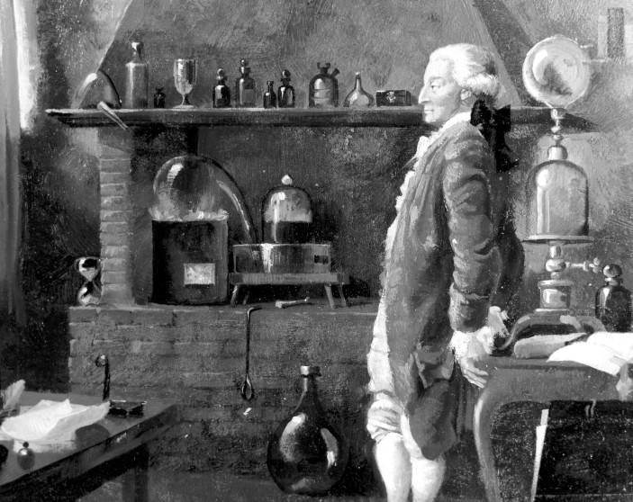
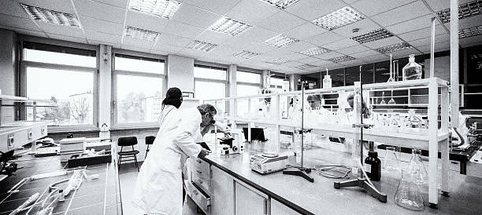

Hide
A simulator holds a secret.

For a century, discovery
moved at the speed of hands.

One experiment.

One result.

One belief, revised.

Some experiments
you only run once.

Now AI agents are
walking into the lab.
Can they choose the experiment?
Can they believe the result?
Junction 2026 · AfterQuery · Break the Agent
Agents run a few noisy experiments on a hidden system, then say what they believe. We score that belief against the exact Bayesian answer.
What we built
A lab agent has two jobs: choose the right experiment, and believe the result the right amount. We grade both.
A simulator holds a secret.
The agent spends a small budget on noisy experiments.
It states its belief. We score it against the exact answer.
Rulebound Battleship
Three ships, one hidden placement rule, a budget of 20, and reports that sometimes lie. The fog is belief: it lifts where the evidence is strong and glows where a ship is likely.
The wet lab is the same problem with real chemistry: six candidate mechanisms, noisy kinetics, limited reagents.
Train on Battleship only. Test on wet-lab choices the model never saw, against a control.